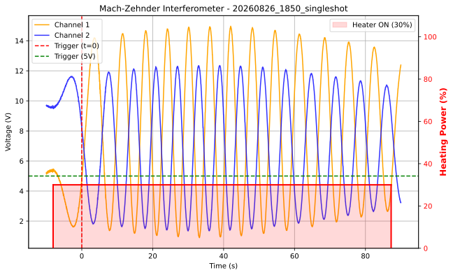

Design and home-built realization of the double-slit experiment in the single-photon regime. Utilizing a heavily attenuated 520 nm laser (N < 0.02) and optical components (mounts and ~0.12 mm slits) entirely prototyped in PLA.

Comparative benchmark of 5 quantum encoding strategies (Amplitude, Angle, Basis, IQP, Projected Quantum Kernel) against a classical RBF baseline, across 6 datasets with different geometries. Evaluates how well each encoding's kernel geometry matches the classification task, using dedicated metrics (Kernel-Target Alignment, Geometric Coefficient) alongside standard accuracy.

Construction and calibration of a Mach-Zehnder interferometer using FDM optical mounts. Fringe intensity acquisition via OPT101 photodiodes and a Siglent SDS824XHD oscilloscope, with thermally induced phase shift via a Kapton heater.
M.Sc. Physics (Quantum Computing and Technologies)
2025 – 2027B.Sc. Physics
2021 – 2025- IEEE QCE26 (Toronto, Sep 2026) – Student Volunteer
- CISF26 (Rome, 2026) – Poster Presenter (B.Sc. Thesis)
- SIPE25 (Bari, 2025) – Poster Presenter (B.Sc. Thesis)
- LoT25 (Pisa/Florence, 2025) – Poster Presenter (B.Sc. Thesis)